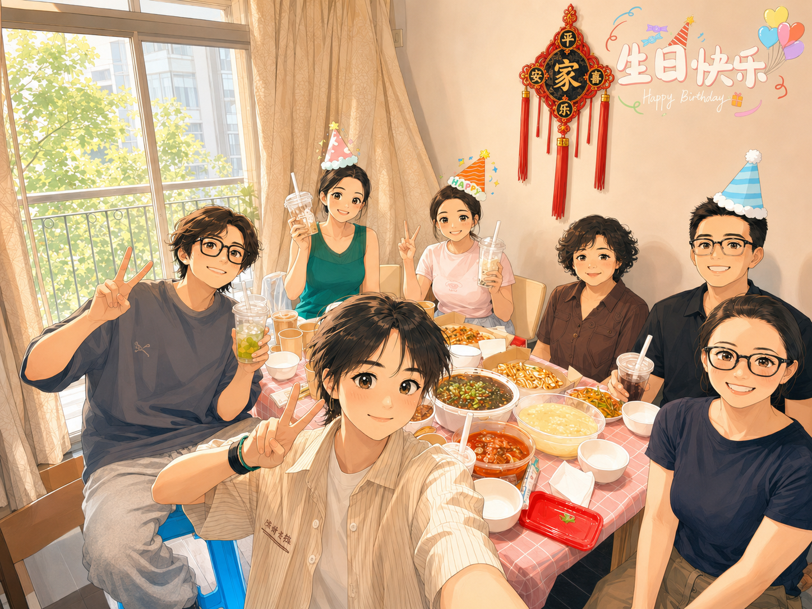
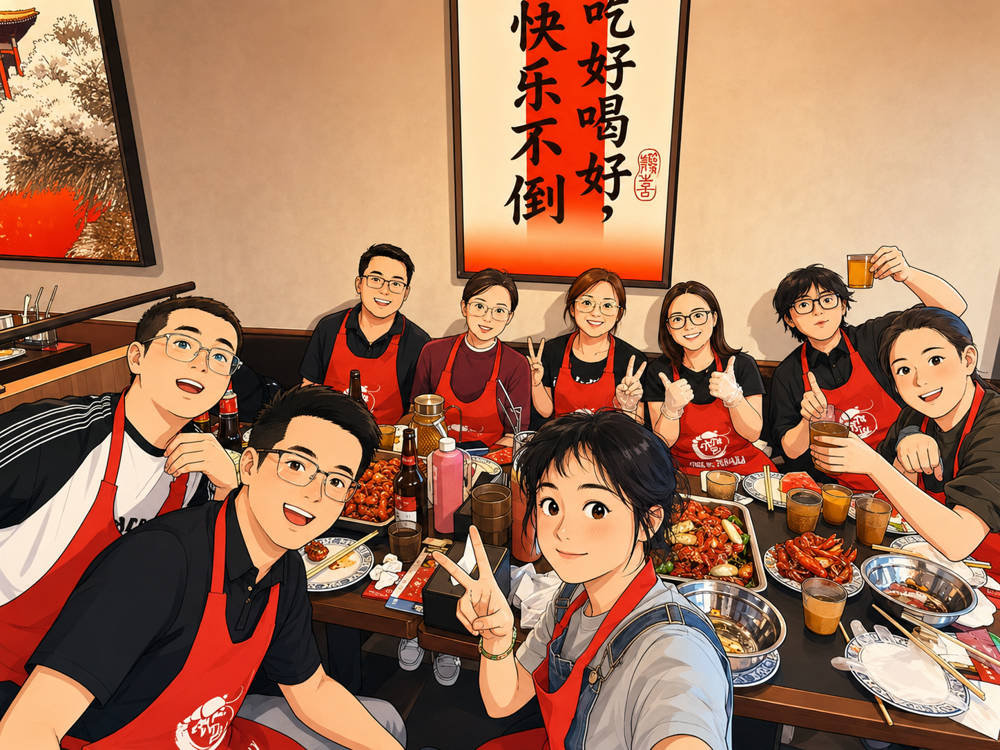

Lab Activities
Dr. Huang and Dr. Zhu visited the School of Medicine, Tsinghua University, and met with Dr. Zhu's former mentor, Dr. Charlie, from St. Jude Children’s Research Hospital.

Lab members gathered at Haiyan's home to celebrate her birthday, along with the recent birthdays of Ping Li and Haimeng.

Celebrating Yuhui’s successful master’s thesis defense and the birthdays of two PIs.

Welcome Haiyan and Weixin to the Huang & Zhu Lab!
Annual lab gathering before the Spring Festival.

Celebrating Yuhui’s birthday together.

Welcome Ping Li to the Huang & Zhu Lab!

Dr. Huang taught a graduate course at the Hainan International Medical Center, Shanghai Jiao Tong University School of Medicine.

Welcome Qinglin to the Huang & Zhu Lab!
Dr. Huang presented at the ISSCR Annual Meeting and, together with Dr. Zhu, visited Prof. Pengtao’s beautiful seaside lab.


Dr. Huang gave an invited talk at the 6th Chinese Conference on Hematological Physiology.

Welcome Haimeng and Yuhui to the Huang & Zhu Lab!

Dr. Huang has been officially appointed as a Research Professor (Full Professor equivalent) at Shanghai Jiao Tong University School of Medicine!
Dr. Huang gave a talk at the 2024 International Conference on Life Sciences, Guiyang, China — The 19th SCBA / 14th CBIS Biennial Symposium of the Society of Chinese Bioscientists in America (SCBA) and the Chinese Biological Investigators Society (CBIS) — and met with her mentor from St. Jude.

Dr. Zhu gave an invited talk at the Chinese Stem Cell Annual Meeting.